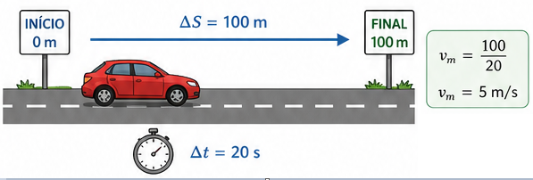
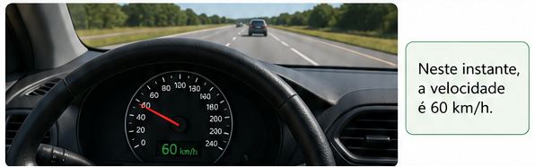

No Sistema Internacional (SI): metros por segundo ($\text{m/s}$).
Uso cotidiano: quilômetros por hora ($\text{km/h}$).
Regra prática de conversão:
$\text{m/s} \xrightarrow{\times 3,6} \text{km/h}$
$\text{km/h} \xrightarrow{\div 3,6} \text{m/s}$
3. Velocidade Escalar Instantânea ($v$)
É a velocidade exata do móvel registrada em um determinado instante específico de tempo ($t$). Corresponde à velocidade média calculada em um intervalo de tempo extremamente pequeno ($\Delta t$ tendendo a zero).
📖 Velocidade Média e Instantânea
1. O Conceito Físico de Velocidade
Após compreendermos como localizar um corpo através do espaço ($S$) e mensurar seu deslocamento ($\Delta S$), precisamos quantificar o quão rápido essa mudança ocorre. A grandeza física responsável por associar o deslocamento espacial ao tempo gasto é a velocidade.
2. Velocidade Escalar Média ($v_m$)
Imagine a corrida de um carrinho de controle remoto ao longo de uma pista de $100\text{ metros}$. Se o carrinho foi ligado e começou a andar no segundo zero e cruzou a linha de chegada aos $20\text{ segundos}$, ele gastou $20\text{ segundos}$ no percurso. A sua velocidade média foi de $5\text{ m/s}$.
Isso não significa que o carrinho correu exatamente a $5\text{ m/s}$ o tempo todo. Ele pode ter derrapado na largada, feito uma curva mais devagar ou acelerado tudo o que podia em uma linha reta. A velocidade média ignora essas variações e avalia globalmente o trajeto inteiro:
$$v_m = \frac{\Delta S}{\Delta t}$$

Figura 1: A velocidade média considera apenas a variação total de espaço dividida pelo tempo total gasto.
3. Fator de Conversão de Unidades
Nas ciências, a unidade padrão para comprimento é o metro ($\text{m}$) e para tempo é o segundo ($\text{s}$), resultando em $\text{m/s}$. No trânsito, utilizamos $\text{km/h}$. A relação matemática exata entre elas baseia-se em:
Figura 2: Esquema prático de conversão. Multiplica-se por 3,6 de m/s para km/h; divide-se por 3,6 de km/h para m/s.
4. Velocidade Escalar Instantânea ($v$)
Diferente da média, a velocidade instantânea indica a rapidez do corpo em uma fração infinitesimal de tempo. É o valor indicado pelo velocímetro de um veículo em movimento a cada segundo.
Matematicamente, dizemos que a velocidade instantânea é o limite da velocidade média quando o intervalo de tempo estudado aproxima-se o máximo possível de zero ($\Delta t \to 0$).

Figura 3: O velocímetro registra a velocidade escalar instantânea daquele exato momento.
5. Classificação do Movimento quanto ao Sinal da Velocidade
Dependendo do sentido em que o corpo se desloca sobre a trajetória orientada, podemos classificar seu movimento em:
Movimento Progressivo ($v > 0$): O móvel caminha a favor da orientação da trajetória (suas posições aumentam com o tempo). Consequentemente, $\Delta S > 0$.
Movimento Regressivo ou Retrógrado ($v < 0$): O móvel caminha contra a orientação da trajetória (suas posições diminuem com o tempo). Consequentemente, $\Delta S < 0$.
💡 Física em Ação
📸 Radares de Velocidade (Pardais)
Os radares fixos tradicionais utilizam sensores magnéticos embutidos no asfalto separados por uma distância fixa conhecida. Quando as rodas passam pelo primeiro e pelo segundo sensor, o computador calcula a velocidade média naquele trecho de poucos metros. Como a distância é curtíssima, o resultado aproxima-se perfeitamente da velocidade instantânea.
⚡ A Velocidade da Luz
A luz propaga-se no vácuo a uma velocidade instantânea limite constante de aproximadamente $300.000\text{ km/s}$ (ou $3 \times 10^8\text{ m/s}$). Isso significa que ela seria capaz de dar mais de 7 voltas completas ao redor da Terra em um único segundo!
✅ Questões Resolvidas (R 1 a 5)
R 1: Cálculo Simples de Velocidade Média
Enunciado: Um ônibus de turismo percorre a distância de $240\text{ km}$ entre duas capitais em exatamente $3\text{ horas}$. Qual foi a velocidade escalar média desenvolvida por esse veículo durante a viagem?
O ônibus desenvolveu uma velocidade escalar média de $80\text{ km/h}$.
R 2: Conversão de km/h para m/s
Enunciado: Um carro de Fórmula 1 atinge a velocidade instantânea máxima de $360\text{ km/h}$ em uma reta de circuito. Expresse o valor dessa velocidade utilizando a unidade padrão do SI ($\text{m/s}$).
Resolução:
Para converter uma velocidade expressa em $\text{km/h}$ para $\text{m/s}$, devemos efetuar a divisão do valor numérico pelo fator constante de $3,6$:
$$
\begin{aligned}
v &= \frac{360\text{ km/h}}{3,6} \\
v &= \mathbf{100\text{ m/s}}
\end{aligned}
$$
A velocidade do bólido equivale a $100\text{ m/s}$ (ou seja, ele percorre $100\text{ metros}$ a cada segundo).
R 3: Cálculo do Tempo Gasto
Enunciado: Uma composição ferroviária de carga trafega com uma velocidade escalar média estável de $54\text{ km/h}$. Quanto tempo, em horas, esse trem levará para vencer uma linha férrea de $162\text{ km}$ de extensão?
2. Isolando o intervalo de tempo ($\Delta t$) na definição:
$$
\begin{aligned}
v_m = \frac{\Delta S}{\Delta t} \implies \Delta t &= \frac{\Delta S}{v_m} \\
\Delta t &= \frac{162}{54} \\
\Delta t &= \mathbf{3\text{ horas}}
\end{aligned}
$$
R 4: Velocidade Média com Parada no Percurso
Enunciado: Um motorista parte de sua casa e viaja por $100\text{ km}$ a uma velocidade média de $50\text{ km/h}$. Em seguida, ele para em um posto por $30\text{ minutos}$ para lanchar. Logo após, viaja mais $80\text{ km}$ a uma velocidade média de $80\text{ km/h}$. Determine a velocidade média total da viagem inteira.
Resolução:
A velocidade média geral exige o deslocamento total dividido pelo tempo total totalizado (incluindo as paradas).
Enunciado: Um objeto se move obedecendo às seguintes posições: em $t_1 = 2\text{ s}$ ele se encontra no espaço $S_1 = 10\text{ m}$; em $t_2 = 6\text{ s}$ ele atinge o espaço $S_2 = 34\text{ m}$. Calcule a velocidade escalar média do objeto nesse intervalo.
Enunciado: Uma ave migratória voa mantendo uma velocidade escalar média estável de $15\text{ m/s}$ continuamente. Converta essa velocidade para $\text{km/h}$ e calcule qual a distância percorrida por ela, em quilômetros, após voar ininterruptamente por $4\text{ horas}$.
Resolução:
1. Conversão da velocidade para $\text{km/h}$:
$$ v = 15 \times 3,6 = \mathbf{54\text{ km/h}} $$
2. Cálculo da distância percorrida em $4\text{ horas}$:
$$
\begin{aligned}
v_m = \frac{\Delta S}{\Delta t} \implies \Delta S &= v_m \times \Delta t \\
\Delta S &= 54\text{ km/h} \times 4\text{ h} \\
\Delta S &= \mathbf{216\text{ km}}
\end{aligned}
$$
P 7: Movimento de Retrocesso
Enunciado: Um móvel realiza um percurso sobre uma trajetória retilínea regulamentada da seguinte maneira: parte da posição $S_0 = 120\text{ m}$ no instante $t_0 = 0\text{ s}$ e chega à posição $S_f = 20\text{ m}$ quando o cronômetro marca $t_f = 5\text{ s}$. Determine a velocidade escalar média do movimento e classifique-o em progressivo ou retrógrado.
Resolução:
1. Cálculo do deslocamento ($\Delta S$) e tempo ($\Delta t$):
Classificação: Como o valor da velocidade escalar é negativo ($v < 0$), o móvel desloca-se contra a orientação da trajetória, configurando um movimento retrógrado (ou regressivo).
P 8: Ultrapassagem de um Corpo Extenso
Enunciado: Um trem de carga de $150\text{ m}$ de comprimento viaja com velocidade constante de $10\text{ m/s}$. Sabendo que ele deve atravessar completamente uma ponte de $250\text{ m}$ de extensão, calcule o intervalo de tempo necessário para concluir a travessia.
Resolução:
Como o trem é um corpo extenso, para atravessar completamente a ponte, a sua extremidade traseira deve passar pelo final da ponte. Logo, o deslocamento total necessário corresponde ao comprimento da ponte somado ao próprio comprimento do trem:
O trem levará $40\text{ segundos}$ para realizar a travessia completa.
P 9: Velocidade Média em Duas Metades Ideais
Enunciado: Um veículo percorre uma estrada dividida em duas etapas de mesmo comprimento ($\Delta S_1 = \Delta S_2$). A primeira metade é percorrida com velocidade escalar média de $60\text{ km/h}$, e a segunda metade com velocidade média de $90\text{ km/h}$. Calcule a velocidade média da viagem completa. (Dica: a resposta não é a média aritmética simples de 75 km/h!).
Resolução:
Seja $X$ o comprimento de cada metade. O deslocamento total é $2X$.
Tempo na primeira metade: $\Delta t_1 = \frac{X}{60}$
Tempo na segunda metade: $\Delta t_2 = \frac{X}{90}$
Nota: Quando as distâncias são iguais, a velocidade média é dada pela média harmônica: $v_m = \frac{2 \cdot v_1 \cdot v_2}{v_1 + v_2}$.
P 10: O Ano-Luz como Distância
Enunciado: Na astronomia, o ano-luz é uma unidade de distância definida como o espaço percorrido pela luz no vácuo ao longo de um ano terrestre. Sabendo que a velocidade da luz é de $3 \times 10^5\text{ km/s}$ e considerando um ano composto por $3,15 \times 10^7\text{ segundos}$, determine em notação científica o valor de um ano-luz expresso em quilômetros.
Resolução:
Utilizando a relação $\Delta S = v \cdot \Delta t$: